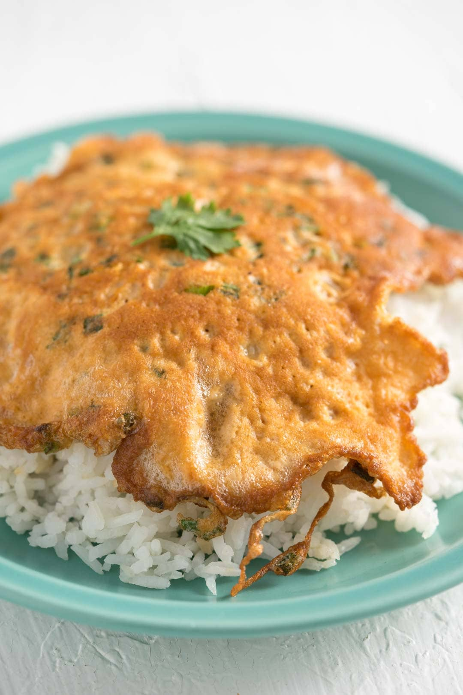

Back to country page
Return to Home Page
Thai Fried Minced Meat with Holy Basil (

Source: theworksoflife.com
Thai Stir Fried minced meat, a staple home meal
Ingredients:
tablespoons vegetable oil
(2 tbsp)
shallots (thinly sliced)
(2 pcs)
cloves garlic (sliced)
(7 cloves)
Thai bird or holland chilies (de-seeded, if desired, and thinly sliced)
(3 pcs)
pound ground pork (450g)
teaspoon sugar
tablespoon fish sauce
tablespoon thin/light soy sauce
teaspoons dark soy sauce
teaspoons oyster sauce
cup low sodium chicken broth or water
holy basil leaves (about 1 1/2 cups packed)
Preparation Steps:
Take the green onion and remove the root. Finely chop the rest and set aside.
Heat the vegetable oil in a frying pan over medium-high heat.
Crack an egg into a bowl. Add the chopped green onions, fish sauce and beat together with a fork.
Check if the oil is lightly smoking hot. You should be able to see a bit of smoke coming up from it.
Once one side golden and the egg mixture holds together, flip the egg with a spatula and fry the other side for another minute or until golden.
Turn off the heat and serve the Thai omelette on a bed of warm steamed rice with Sriracha sauce or ketchup and enjoy!
Return To Top